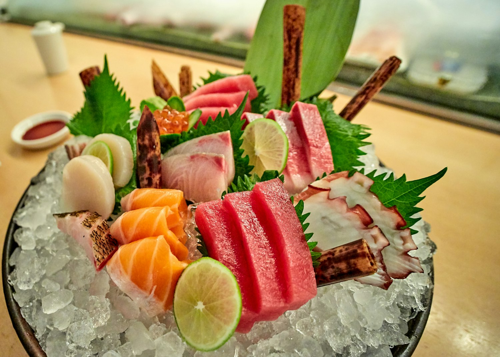
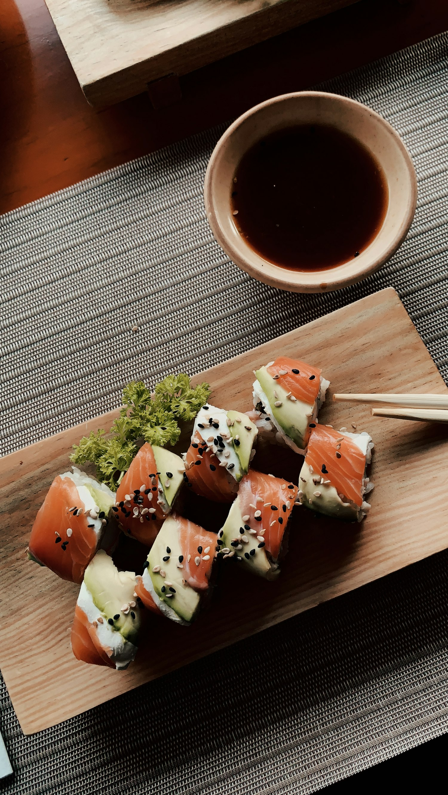
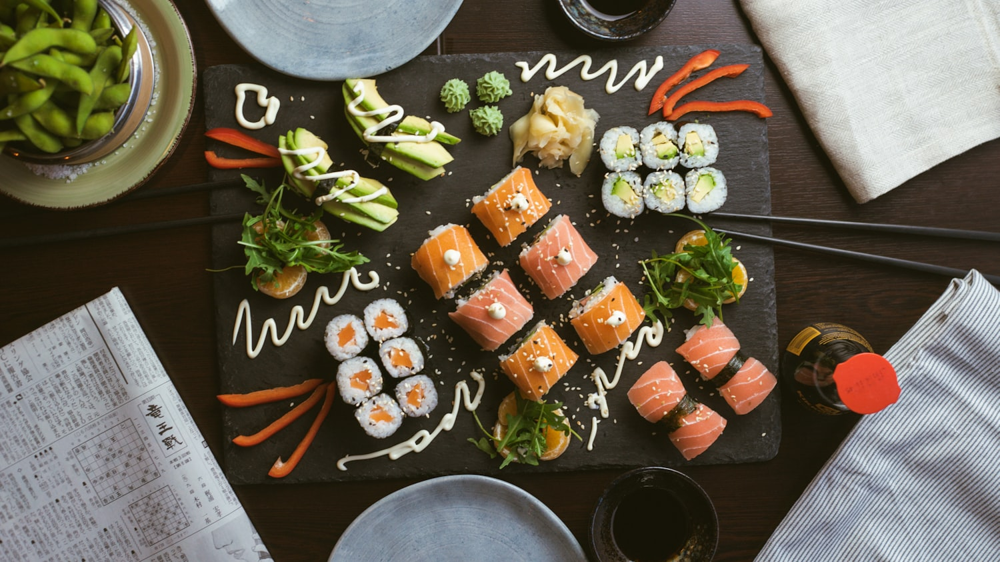
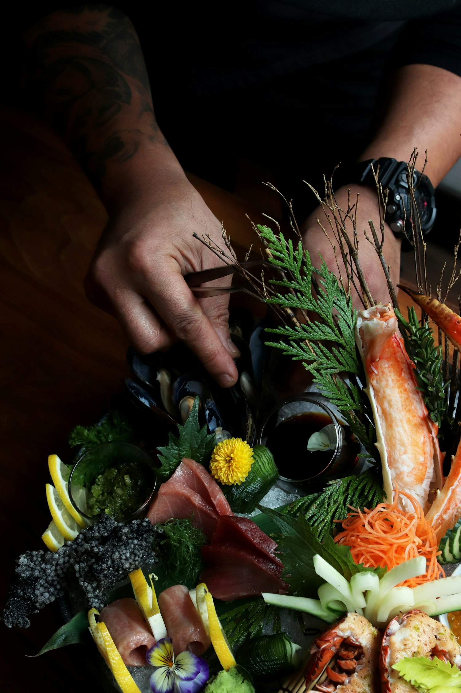
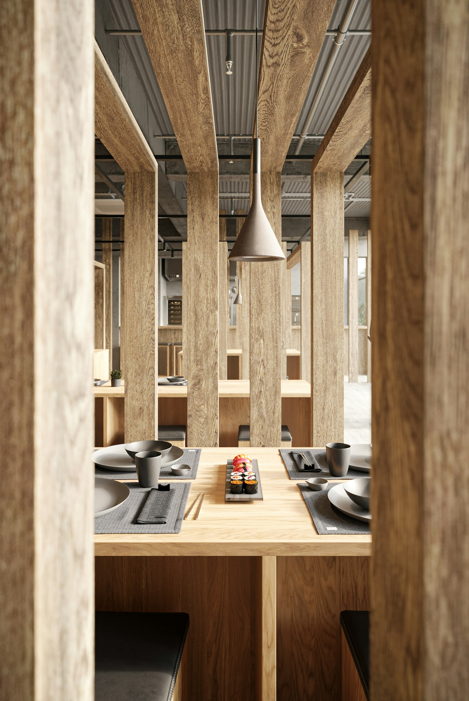
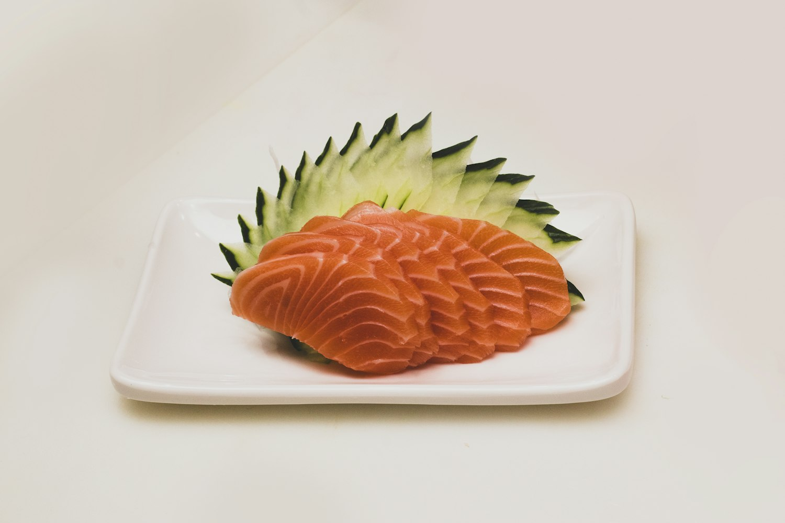

Ten seats · One counter · Birmingham
A counter omakase where Tokyo precision meets the slow warmth of a Mediterranean afternoon — a seasonal progression read aloud, served by the hands that made it.

Itadakimasu序 — The welcome
Each evening begins before dawn at the market and ends at a counter built for ten. There is no à la carte, no list to scan — only a progression of small, exact courses shaped by the day's best fish, finished with olive oil pressed an ocean away and citrus from our own sill.
Chef Rei Adachi calls it hi-nata — “a place turned toward the sun.” You sit where the light falls, and we cook toward it.
Our story →We don't ask what you'd like. We ask the sea, and then we cook the answer.Rei Adachi · Chef & Counter
道 — Find your way

Thirteen courses, read course by course. What grows, swims, and ripens this week.
View progression →
One chef, ten guests, and the quiet theatre of a meal made an arm's length away.
Meet the chef →
Two seatings nightly, Tuesday through Sunday. Seats are released two weeks ahead.
Hold a seat →
Course 06 · Toro06
This week at the counter
The belly cut, rested until it turns to silk, then warmed by a single brushstroke of olio nuovo and a breath of charred citrus. One bite. It is the dish people write to us about.
The full progression →